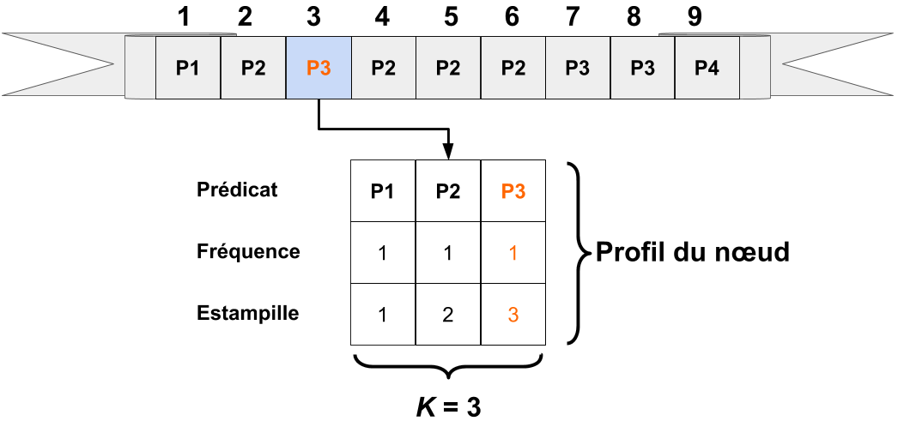
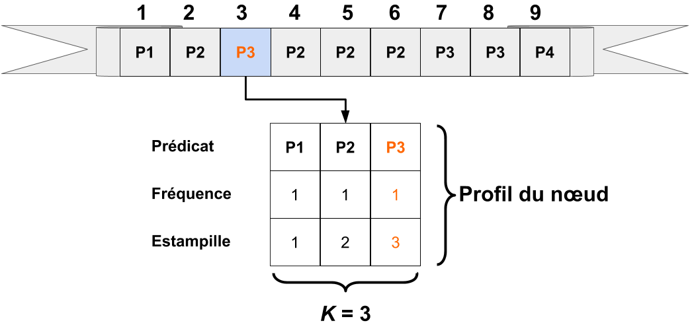
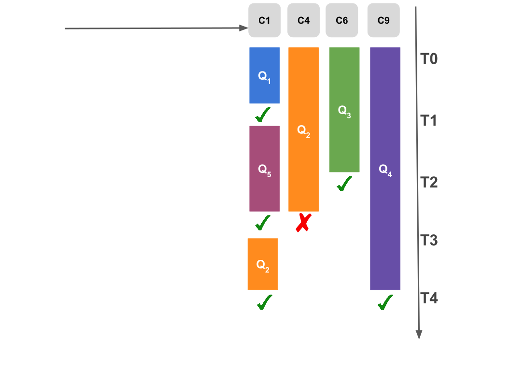
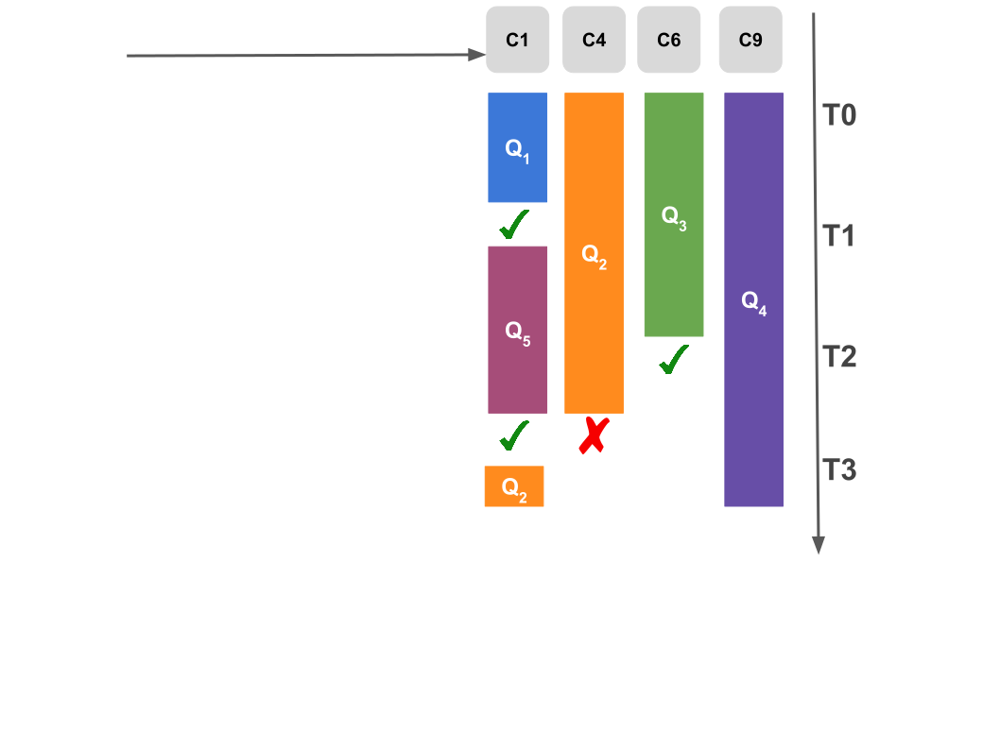
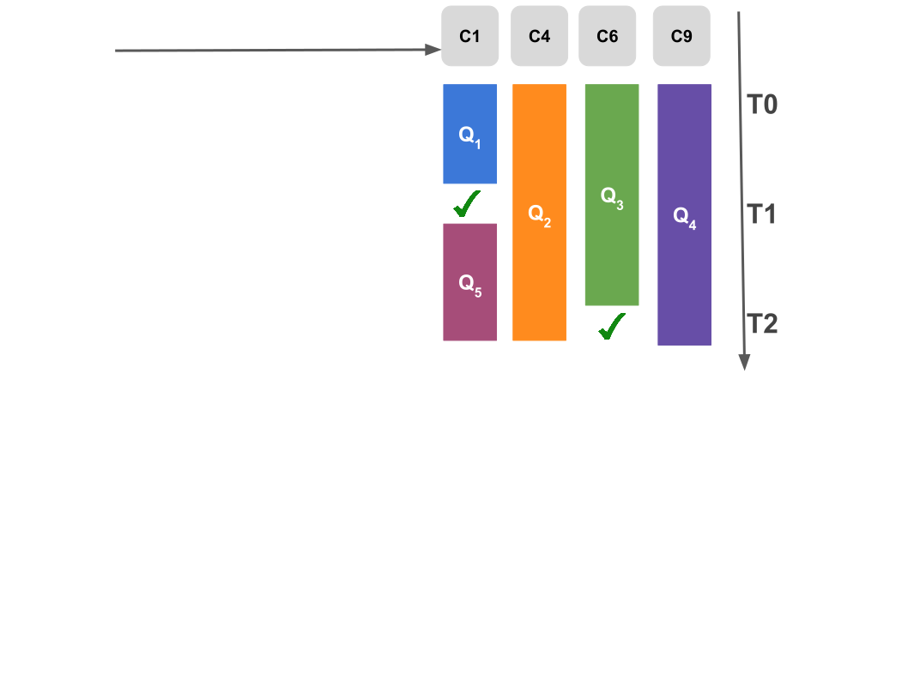
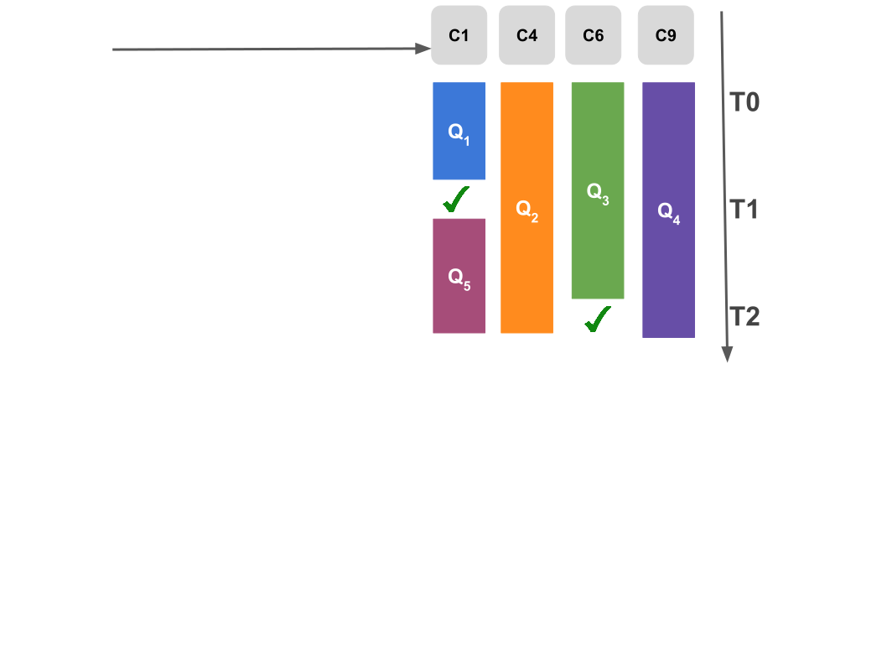

Collaboration dans une fédération de
consommateurs de données liées
Pauline Folz
Thèse de doctorat soutenue le
12 octobre 2017
Jury
| Rapporteurs : | Catherine Faron Zucker, Maître de conférences, Sophia Antipolis |
| Esther Pacitti, Professeur, Université de Montpellier | |
| Examinateur : | Hubert Naacke, Maître de conférences, Université Paris 6 |
| Marc Gelgon, Professeur, Université de Nantes | |
| Membre invité : | Hervé Jaigu, Chargé de missions innovation, Nantes Métropole |
| Directeur : | Pascal Molli, Professeur, Université de Nantes |
| Co-encadrante : | Hala Skaf-Molli, Maître de conférences, Universté de Nantes |

Données RDF

Triple Pattern Fragment
Les clients TPF exécutent des requêtes SPARQL sur des serveurs TPF [12] :

- Minimise le traitement côté serveur, grâce aux fragments
- Jointures exécutées du côté clients

Triple Pattern Fragment
Le médiateur TPF s'exécute dans un navigateur Web
Les caches jouent un rôle important dans les performances de TPF :

- Les caches contiennent des fragments
- Les fragments sont suceptibles d'être réutilisés localement ou à travers les clients
Si les médiateurs collaborent en partageant leurs ressources.
Est-il possible d’obtenir un meilleur compromis entre performances et disponibilité des données ?
Client TPF 1 exécute Q1
 152 Appels HTTP
152 Appels HTTP
| 0 | ?book http://www.w3.org/1999/02/22-rdf-syntaxns#type http:.../ontology/Book |
| 1 | ?book http:.../ontology/author ?author |
| 2 | http:.../resource/%22...And Ladies of the Club%22 http:.../ontology/author ?author |
| 3 | http:.../resource/%22A%22 Is for Alibi http:.../ontology/author ?author |
| 4 | http:.../resource/%22B%22 Is for Burglar http:.../ontology/author ?author |


Que se passe t'il si les clients collaborent ?
Travaux connexes
Table de hachage distribuées (DHT) : distibue le cache à travers les participants [12] :

- Trouve le framgent s'il existe
- Une requête → 20 000 appels → 20 000 sauts log(n), n: nombre de pairs
Travaux connexes
Cache comportemental : connecte un nombre fixe de nœuds similaires [13] :

- Accès direct sans latence
- Pas de garantie de trouver le fragment
- Expérimenté avec des historiques de navigation Web
Et si on utilisait les caches comportementaux pour des historiques de requêtes ?
Approche
 Connecte les nœuds à travers un réseau d'échantillonage aléatoire
des pairs (RPS) :
Connecte les nœuds à travers un réseau d'échantillonage aléatoire
des pairs (RPS) :
- Chaque nœud maitient une vue partielle du réseau
Phases d'échange de voisins :
- renouvelle périodiquement les voisins
- gère les arrivées et départs des nœuds et les partitions réseau
Réseau implémenté par Cyclon [15]
Approche
 Le réseau RPS garantit la connectivité entre tous les clients
Le réseau RPS garantit la connectivité entre tous les clients
C6 est connecté à C3 :
- C6 → DBpedia
- C3 → DrugBank
- C6 n'est pas similaire à C3
Nécessite un second réseau superposer pour gérer la similarité comme proposé dans Gossple [16]
Approche
 Réseau superposé de similarité (CON) :
Réseau superposé de similarité (CON) :
- Chaque nœud à un profil basé sur l'historique des requêtes qu'il a exécutées
Les phases d'échange de voisins permettent d'obtenir des voisins plus similaires.
Chaque nœud classe et sélectionne les meilleurs voisins selon la similarité de leurs profils
Comment profiler les nœuds ?

Exécuter des requêtes produit un flux de fragment, le cache est une fenêtre sur de flux
Profil = résumé du passé récent = fréquence des k derniers prédicats utilisés
Algorithme de profilage

Exemple - Algorithme de profilage


 



Exemple - Echange de voisins
Avant Après

Pour C5 : C9 est plus similaire que C8
Pour C6 : C8 est plus similaire que C9

Exécuter une requête avec CyCLaDEs


C1 exécute Q1
Pour chaque triplet, essayé de résoudre le triplet dans :
- Cache local
- Cache des voisins
- Cache HTTP
- Serveur TPF
Est-ce que le cache distribué passe à l'échelle ?

Paramètres : BSBM 1M, cache = 1000, profil = 10, RPS(4,6,7), CON(9,15,20)
~ 20% des appels sont résolus par le cache décentralisé
Est-ce que la taille du jeux de données impacte le cache décentralisé ?

Paramètress : 10 clients, cache = 1000, RPS = 4, CON = 9
Le cache décentralisé résiste mieux que le cache local
CyCLaDEs avec deux communautés

Deux communautées accédent deux jeux de données BSBM différents sur le même serveur
Les nœuds sont sur le même réseau aléatoire
Est-ce que CyCLaDEs grâce aux profils va bien détecter les deux communautés ?
Est-ce que la précision du profil impacte la définition des communautés ?

Paramètress : 2 BSBM 1M, 50 clients par jeu de données, cache = 1000
Dans le réseau superposé CON, CyCLaDEs contruit deux communautés distinctes : BSBM1 et BSBM2
Que se passe-t'il si un consommateur de données peut partager ses capacités d'exécution de requêtes SPARQL ?
Exécution de requêtes
| Exécution seul | Exécution en collaboration |
 |
|
| Fini à T3 | Fini à T2 |
Limite de parallélisation
Allocation de 1509 requêtes des journaux de DBpedia de manière optimale LPT [19]

La parallélisation réduit le temps de réponse
Paralléliser au-delà d'un certain seuil ne réduit plus le temps de réponse
Est-ce que le cache local est réutilisé entre 2 requêtes ?
Exécution de 1509 requêtes sans effacement du cache (reset off) et avec effacement du cache (reset on) entre l'exécution de requêtes

La localité n'a pas d'impacte sur la délégation
Algorithme
  



Expériences
Configuration :
Supposons une fédération de 6 médiateurs avec des requêtes

|